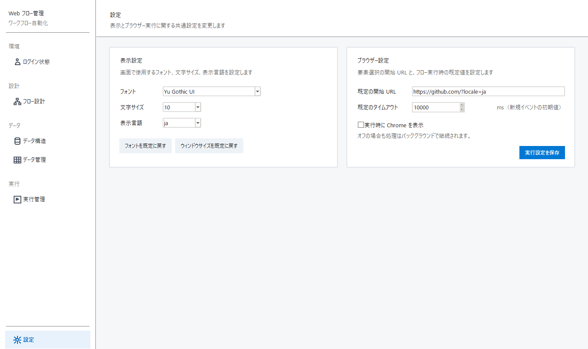

画面表示と、ブラウザーを開くときの共通初期値を設定します。

| 項目 | 操作内容 |
|---|---|
| フォント | アプリ画面で使用するフォントを変更します。 |
| 文字サイズ | 画面全体の文字サイズを変更します。 |
| 表示言語 | 日本語または中国語を選択します。 |
| フォントを既定に戻す | フォントと文字サイズを初期値へ戻します。 |
| ウィンドウサイズを既定に戻す | メイン画面を 1380×820 に戻します。 |
| 項目 | 操作内容 | 注意 |
|---|---|---|
| 既定の開始 URL | 要素選択用ブラウザーと認証ブラウザーの初期ページを設定します。 | http:// または https:// で始めます。 |
| 既定のタイムアウト | 新規イベントに設定する初期タイムアウトをミリ秒で指定します。 | 1～3600000 の整数を指定します。 |
| 実行時に Chrome を表示 | 正式実行の Chrome を表示／非表示にします。 | 非表示でも処理はバックグラウンドで継続します。 |
| 実行設定を保存 | 上記のブラウザー設定を保存します。 | 入力後に必ず押します。 |
goto イベントを登録して明示します。ブラウザーに前回のページが残っていることを前提にしないでください。